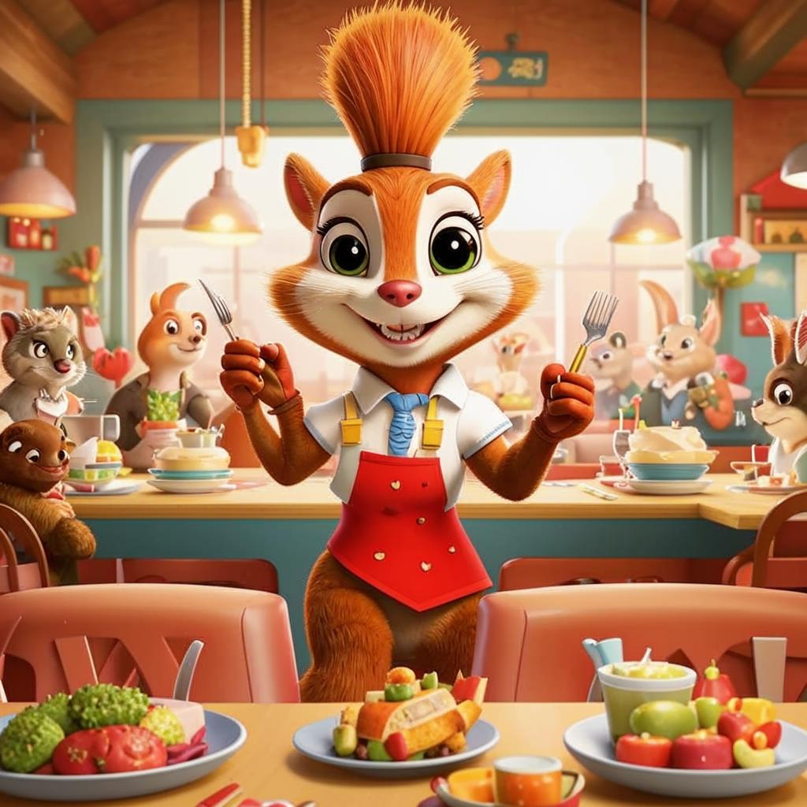

У нас на обед и ужин подают самые бодрящие блюда и напитки в непринужденной обстановке. Здесь вы непременно окунётесь в атомосферу мимолётного счастья!
Зачем вам где-то ждать белочку, когда можно самому пожаловать к ней в гости?!

Компания В гостях у Белочки может организовать любые мероприятия - от вечеринок с пивасиком до поминок вашего любимого суслика.
Веселитесь до упаду! Все остальные заботы мы берём на себя!
село Белочкино, ул. Удачи, д.13
с понедельника по четверг - с 12 утра до 25 вечера
с пятницы по субботу - с 15 утра до 2 полуночи
воскресенье - никто не помнит {:p